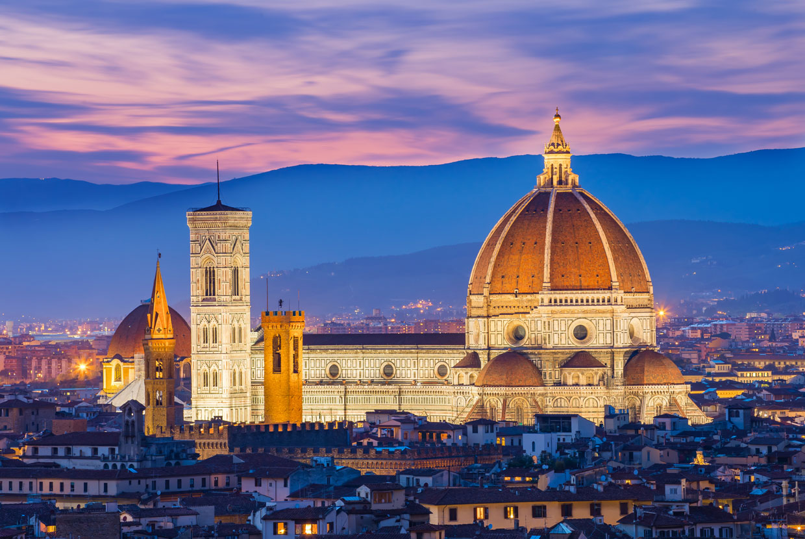
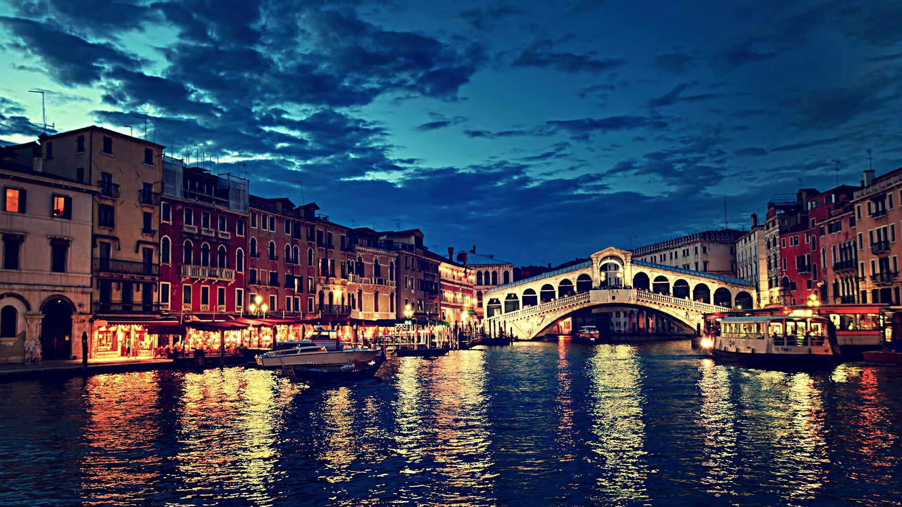
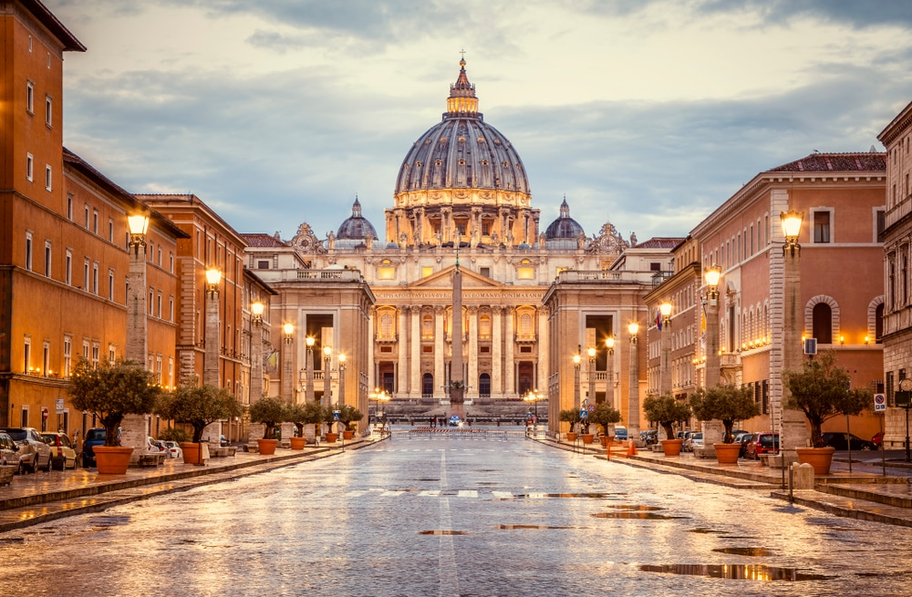
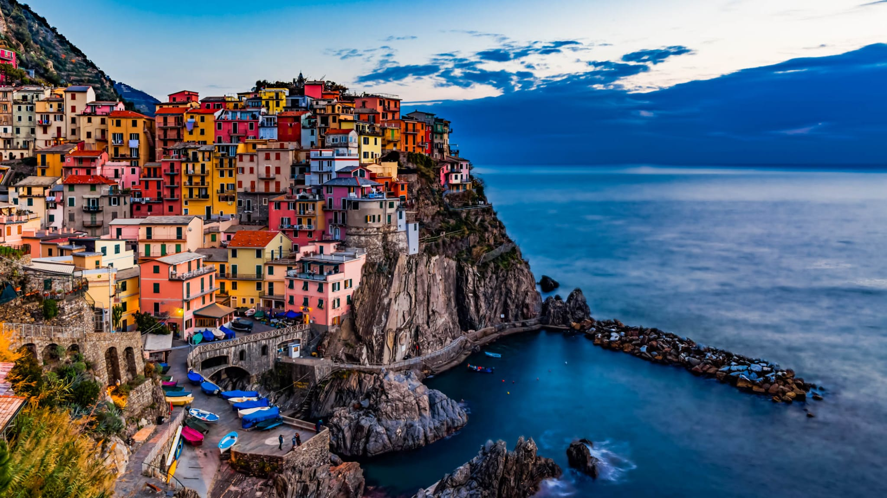
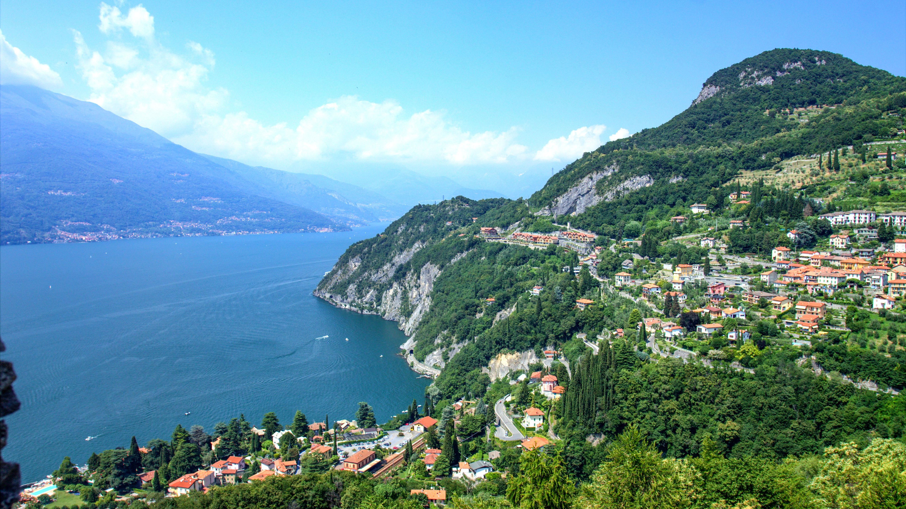

1-Colosseum

Colosseum, also called Flavian Amphitheatre, giant amphitheatre built in Rome under the Flavian emperors. Construction of the Colosseum was begun sometime between 70 and 72 CE during the
reign of Vespasian. It is located just east of the Palatine Hill, on the grounds of what was Nero’s Golden House. The artificial lake that was the centrepiece of that palace complex was drained,and
the Colosseum was sited there, a decision that was as much symbolic as it was practical. Vespasian, whose path to the throne had relatively humble beginnings, chose to replace the tyrannical
emperor’s private lake with a public amphitheatre that could host tens of thousands of Romans.
2-Florence Duomo Santa Maria del Fiore.

Santa Maria del Fiore , designed by Arnolfo di Cambio , is the third largest church in the world (after St. Peter's in Rome and St. Paul's in London) and was the largest church in Europe
when it was completed in the 15th century. It is 153 metres long, 90 metres wide at the crossing, and 90 metres high from the floor to the bottom of the lantern.The third and last cathedral
of Florence,It was dedicated to Santa Maria del Fiore,the Virgin of the Flower,in 1412,a clear allusion to the lily,the symbol of the city of Florence.It was built over the second cathedral,
which early Christian Florence had dedicated to St.Reparata.
The numerous different styles that we encounter in the building bear witness to changing tastes over the long period of time that elapsed between its foundation and its completion.
3-The Grand Canal in Venice.

Grand Canal, Italian Canale Grande, main waterway of Venice, Italy, following a natural channel that traces a reverse-S course from San Marco Basilica to Santa Chiara Church and divides the
city into two parts. Slightly more than 3 km (2 miles) long and between 30 and 70 metres (100 and 225 feet) wide, the Grand Canal has an average depth of 5 metres (17 feet) and connects at
various points with a maze of smaller canals. These waterways carry the bulk of Venetian transportation, as automobiles are banned throughout much of the city. Traditional poled gondolas are
a favourite with tourists but are now vastly outnumbered by motorized public-transit water buses (vaporetti) and private water taxis.
4-The Leaning Tower of Pisa.

Leaning Tower of Pisa,Italian Torre Pendente di Pisa, medieval structure in Pisa,Italy, that is famous for the settling of its foundations,which caused it to lean 5.5 degrees(about [4.5 metres])
from the perpendicular in the late 20th century. Extensive work was subsequently done to straighten the tower, and its lean was ultimately reduced to less than 4.0 degrees.
The bell tower, begun in 1173
as the third and final structure of the city’s cathedral complex, was designed to stand 185 feet (56 metres) high and was constructed of white marble.
Three of its eight stories had been completed when the uneven settling of the building’s foundations in the soft ground became noticeable. At that time, war broke out
between the Italian city-states, and construction was halted for almost a century.This pause allowed the tower’s foundation to settle and likely prevented its early collapse.
5-St. Peter's Basilica.

St. Peter’s Basilica, also called New St. Peter’s Basilica, present basilica of St. Peter in Vatican City (an enclave in Rome), begun by Pope Julius II in 1506 and completed in 1615 under Paul V.
It is designed as a three-aisled Latin cross with a dome at the crossing, directly above the high altar, which covers the shrine of St. Peter the Apostle. St. Peter’s Basilica is one of the most
renowned works of Renaissance architecture and features many notable Baroque elements. It is often regarded as the greatest building of its age.
The edifice—the church of the popes—is a major pilgrimage site. Frequently drawing crowds of tens of thousands of Catholics, both the basilica and its adjoining St. Peter’s Square are
used for a number of liturgies presided over by the pope throughout the year.
6-Cinque Terre.

The Cinque Terre are one of the most uncontaminated areas in the Mediterranean Sea. Five miles of rocky coast among two promontories, thousands of kilometres of dry-laid stone walls
,five small towns castled up on stone spurs in minuscule creeks.For their history and their position,the Cinque Terre have not suffered a massive expansion. The vineyards
,typical of this area,have contributed to create a unique landscape with dry-laid stone walls,winding paths,enchanting beaches between cliffs and clear waters.
The Cinque Terre have a jagged profile along the five miles of rocky coastline enclosed by two promontories.Rocks overlooking the sea, small coves, bays,ravines,
beaches between cliffs create a unique landscape with crystal-clear sea.
7_Lake Como.

A gorgeous spot that’s a convenient day trip from Milan, Lake Como recently earned fame as home to Hollywood star George Clooney.
But celeb-spotting aside, it’s known for jaw-dropping
natural beauty, elegant old villas—and the scenic towns surrounding the lake.
Check out Varenna, Bellagio, and Menaggio, which offer great views, historic churches, and water-based activities
such as ferries and passenger-only boats.